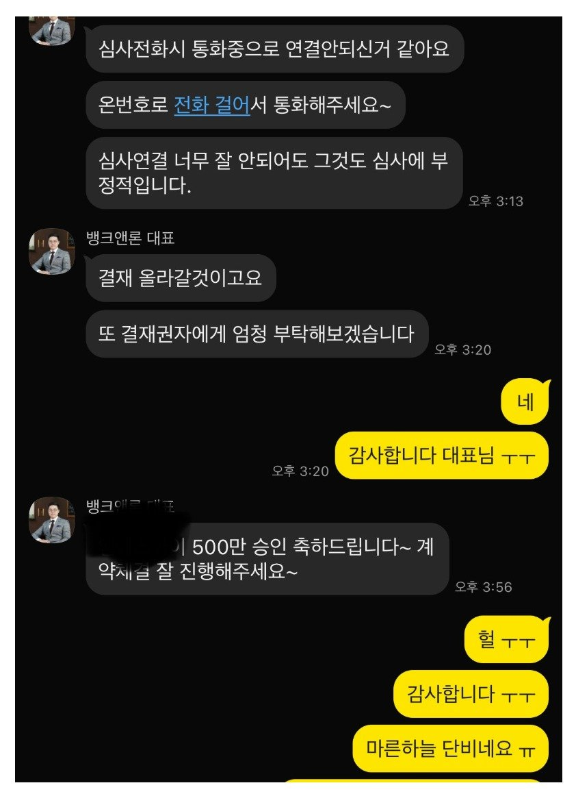

[개인회생자대출] 기대출 3건 4천만 사용중, 건보상 연소득 2760만원인 상황에서 추가대출 성공

회생 36회차 중 26회 납부 미납없음
기대출 차량 설정 3건 4천
월소득 400이나 건보상 230
이게 걸림돌이 되었는데 뱅크앤론
이사님 과장님 두분 다 너무 친절하시고
부결된거 재접수하고 500 승인받았습니다
올해 끝으로 면책 예정인데 대환대출도
뱅크앤론에서 진행하면 좋을듯하네요
어려울때 도와주셔서 감사합니다
https://cafe.naver.com/cityman88/310276